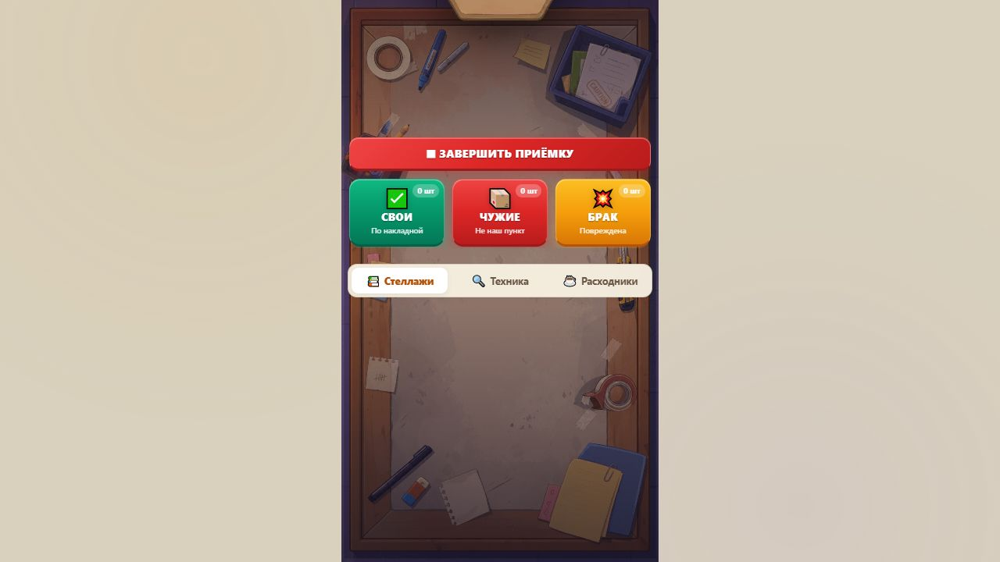

Независимая проверка работы Claude
28 сентября 2026 · проверен ac1a045fa0bbc1dded9fb37a0d17048d4513a8f8 в errorslove190-droid/pvz-simulator. Исходники и инструменты не исправлялись. Это отдельное ревью, а не повтор ранее опубликованного аудита ZIP.
Вывод: два заявленных исправления сохранений работают, но текущую версию рано объявлять готовой к выпуску. Остались риск перезаписи облачного прогресса и доступный во время приёмки магазин. Воспроизводимость сборки зависит от переводов строк Git. Большинство чисел в документации верно.
Что действительно проверено
| Проверка |
Результат |
Сборка первого коммита 297ced9 после обычного Windows checkout |
Не совпала: core.autocrlf=true изменил переводы строк |
| Тот же коммит, извлечённый из Git без преобразования LF |
Совпадает байт в байт с HTML внутри исходного ZIP |
extract → build --check непосредственно из бэкапа |
Совпадает байт в байт |
Неизменённый npm run smoke на main |
Все проверки прошли, код возврата 0 |
| Тот же smoke на исходнике из бэкапа |
Ровно два ожидаемых провала, код возврата 1: приёмка и визит должника |
| ZIP текущей сборки |
Корректный Deflate, CRC верен; единственный index.html без вложенной папки |
| Встроенные ассеты / SDK |
Незаменённых assets/ нет, mock в релиз не попал, путь SDK /sdk.js |
| Сценарии вне smoke |
10 отдельных модельных проб сохранений + сверка чисел и пробы инструментов |
Среда: Windows, Node 24.19.0, установленный Playwright 1.63.0, Chromium 153. Установка зависимостей выполнена как npm install --ignore-scripts --package-lock=false, чтобы не запускать установочные скрипты и не менять lock-файл. Поэтому это не буквальный запуск голого npm install, но smoke и игровой код использованы без правок. Chromium установлен командой Playwright, кэш перенесён в work/browser-cache.
Изолированная рабочая копия первого коммита использована вместо переключения основной папки. Main остался на исходном HEAD. Начальные 3 дня прошли в обеих версиях; различия денег между прогонами не доказывают изменение экономики — случайная последовательность не фиксировалась.
Находки, влияющие на выпуск
1. Критично — ошибка чтения облака не запрещает его перезапись
Место: src/yg.js:359–376, запись src/yg.js:252, :265, :495. Происхождение: унаследовано; это не новая регрессия f5c7a4f.
Воспроизведение: оставить локальный сейв с небольшим прогрессом, иметь более продвинутый облачный сейв; заставить player.getData() отклонить запрос либо не уложиться в 3,5 секунды. Затем открыть игру. Чтение молча игнорируется, но YG.player остаётся доступным записи. В модельной пробе ошибка чтения привела к одному setData с локальными 150 ₽ при восстановлении дня. Значит, непрочитанный облачный прогресс может быть затёрт.
Исправить: отдельно хранить состояние успешного чтения облака. До успешного чтения — только локальные записи; повторить чтение и разрешить конфликт перед синхронизацией. Успешный ответ с пустыми данными должен разрешать первую запись. Одного подавления catch недостаточно; защитить и отложенную запись, и pagehide.
2. Важно — магазин позволяет сохранить незаконченную приёмку как завершённый шаг
Место: src/styles.css:1359 (блок #screen-shop), src/game.js:6291, src/yg.js:222. Происхождение: старый CSS-дефект нарушает предположение нового механизма контрольных снимков.
Воспроизведение: начать приёмку; после закрытия подсказки магазин остаётся видимым, хотя активен screen-morning. В браузере подтверждены одновременно видимые утро и неактивный screen-shop; вкладка «Расходники» доступна при работающем таймере. На дне 2 купить кофе заранее, начать приёмку, затем через оставшийся магазин купить стеллаж. Покупка вызывает YG.save({phase:'shop'}), а явная фаза обходит защиту isMidStep(). После перезагрузки утро запускается заново, но кофе уже потрачен. В пробе сохранены phase:shop, capacity:6, coffee:false вместо исходного согласованного состояния.
Исправить: неактивный магазин скрывать селектором достаточной специфичности; запретить покупки вне реальной фазы магазина; не принимать произвольную явную фазу за доказательство согласованности снимка. Проверять это кликами по видимым элементам, а не только вызовами функций.
3. Важно — более новый несовместимый сейв скрывает рабочую резервную копию
Место: src/yg.js:369–376. Происхождение: унаследовано.
Воспроизведение: localStorage содержит валидный v1, день 20, 5 000 ₽. Облако возвращает объект с более поздним t, но v:99. Сначала выбирается новый объект, затем проверяется его версия; результат — новая игра с 150 ₽, хотя рабочая локальная копия есть. Этот результат воспроизведён модельной пробой.
Исправить: сначала независимо проверить схему и совместимость обеих копий, затем выбрать более новую среди пригодных. При сбое восстановления попробовать другую копию, а испорченную сохранить для диагностики. Не стирать единственную рабочую копию вследствие ошибки другой.
4. Важно — обычный Windows checkout нарушает обещание «байт в байт»
Место: отсутствует .gitattributes; tools/build.mjs:17, обещание в AGENTS.md о проверке исходного коммита. Происхождение: импорт 297ced9.
Воспроизведение: при системном core.autocrlf=true получить 297ced9 и выполнить его build --check. Оригинальный HTML — 5 347 330 байт, 0 CRLF; сборка — 5 356 769 байт, 9 439 CRLF, первое отличие на байте 15. После замены CRLF на LF результат полностью совпал. Отдельный checkout Git-объектов с core.autocrlf=false прошёл сравнение без нормализации результата.
Исправить: закрепить LF для текстовых частей этой версии через .gitattributes, двоичные ZIP/ассеты отметить как binary, добавить проверку из чистого checkout. Нельзя просто нормализовать все будущие бэкапы: другой оригинал может законно содержать CRLF, тогда это нарушит его точное восстановление.
5. Важно — уже испорченные старые сохранения не восстанавливаются
Место: src/yg.js:374–376, :466–469. Происхождение: ограничение исправления, не новый дефект.
Воспроизведение: сохранить исходную игру посреди приёмки, затем загрузить этот v1-сейв в main. Он по-прежнему принимается как phase:customers: посетитель требует заказ, которого нет на полке. Контрольные снимки предотвращают создание новых таких сейвов, но не исправляют накопленные.
Исправить: новая версия/метка согласованности сохранений и отдельный путь восстановления старых повреждённых записей. Не сбрасывать вслепую все сейвы с пустым складом — такое состояние бывает законным. Где миграция не может отличить случаи, предложить восстановление к безопасному началу смены, сохранив деньги/улучшения и исходную копию.
Инструменты и документация
6. Важно — зависимость автотеста уже не соответствует обещанному Node 18+
Место: README.md:9, package.json:14.
Воспроизведение: свежая установка разрешила playwright:^1.56.1 в 1.63.0; пакет объявляет engines.node >=20. Lock-файла нет. Поэтому указание Node 18+ не задаёт поддерживаемую среду для полного набора команд. На бинарнике Node 18 тест отдельно не запускался; утверждение основано на фактически установленной зависимости, а не на выдуманном падении.
Исправить: указать актуальную поддерживаемую Node, закрепить зависимости lock-файлом и CI. Либо отдельно документировать минимум для build/dev и для smoke.
7. Мелочь — подстановка ассетов ломается при совпадающих префиксах имён
Место: tools/build.mjs:27.
Воспроизведение: в build.json перечислить сначала logo.webp, затем logo.webp-2.webp, обе ссылки добавить в HTML. Вместо второй ссылки получается data:image/webp;base64,QQ==-2.webp. Сборка завершается успешно. В нынешнем наборе ассетов такой коллизии не найдено; риск касается переименования/другого входа.
Исправить: заменять полные URL-токены с проверкой границ, проверять остаточные ссылки. Простая сортировка по длине поможет этому примеру, но не заменяет проверку полного совпадения.
8. Мелочь — повреждённый ZIP с неверным CRC принимается читателем
Место: tools/lib/zip.mjs:16–24.
Воспроизведение: изменить байт содержимого index.html в архиве с методом Store, сохранив прежний CRC. Независимый zipfile.testzip() отвергает запись; extract.mjs завершается кодом 0. Это не ошибка CRC в создаваемом релизном ZIP — его CRC верен.
Исправить: проверять CRC, распакованный размер, флаги и границы полей; для ZIP64, шифрования, многотомных архивов явно сообщать неподдерживаемый формат. Сейчас методы 0 и 8 поддерживаются, остальные отвергаются.
9. Мелочь — другой, многокомпонентный бэкап теряет внешние файлы без ошибки
Место: tools/extract.mjs:22–24.
Воспроизведение: архив содержит index.html с <img src="logo.png"> и logo.png. Извлечение и сборка завершаются успешно, итоговый ZIP содержит только HTML с прежней ссылкой. Изображение потеряно. Формат нынешней игры самодостаточный; поддержка произвольного сайта не обещана, но молчаливый успех опасен.
Исправить: проверять, что выбранный HTML действительно самодостаточен; отказывать при внешних локальных ресурсах с понятным сообщением либо переносить их явно. При нескольких index.html — требовать однозначный выбор. Не запускать извлечение без нужной выходной папки поверх ручных правок: extract.mjs:111 рекурсивно очищает её; по умолчанию это src.
10. Мелочь — описание должников завышает число посетителей
Место: docs/game-design.md:48; фактически src/game.js:461, :502.
Воспроизведение: день 2, базовая нагрузка 3, один должник. Документальное «Плюс должники» предполагает 4, код даёт 3: должник занимает место обычного посетителя. Используется max(dayLoad, todayDebts.length), события считаются отдельно.
Исправить: описать замену обычных посетителей должниками до достижения базовой нагрузки, затем рост при её превышении.
Дополнительные уточнения документации: docs/game-design.md:43 — поток 45/35/20 действует, пока остались свои посылки; после исчерпания своих получается 62% чужих и 38% брака (game.js:814–820). В формуле выдачи (docs/game-design.md:50) рейтинг берётся после исхода визита (game.js:5436): разговор при исходном 3,5 даёт 3,6 и 66 ₽. Формула верна, пример требует уточнения момента измерения.
Сохранения: что работает и где сознательный откат
| Сценарий |
Наблюдение |
| Первая приёмка дня 1 |
Контрольного снимка ещё нет, сохранение возвращает null; начатая приёмка повторяется с начала. Целостность не ломается, точного продолжения нет |
| Обычная покупка кофе в магазине |
1 000 → 940 ₽, кофе сохраняется; при откате последующей приёмки возвращается купленный кофе |
| Курьер |
После платы 50 ₽ сохраняются 950 ₽ и пустой список возвратов; повторной платы при восстановлении нет. Может повториться текст диалога |
| Скандалист до подтверждения результата |
Рейтинг 3,42 откатывается к 3,5, событие повторяется. Так устроен снимок до текущего шага |
| Бомж, кража конфет до завершения |
Конфеты и рейтинг возвращаются к состоянию до визита. Исход можно переигрывать |
| Награда склада во время визита должника |
При выполнении тела наградного callback ненужная коробка удалена из снимка, текущий должник 6110 и его заказ сохранены |
| Старый повреждённый сейв / конфликт облака |
См. находки 1, 3, 5 |
Для скандалиста и бомжа это обозначенное в docs/saves.md ограничение подхода, а не доказательство поломанного восстановления. Но игрок теряет уже показанный результат и может отменять плохие исходы перезапуском. Если результат должен быть окончательным сразу после выбора, нужен снимок результата и его идемпотентное восстановление; случайный исход также надо фиксировать. Это отдельное продуктовое решение перед выпуском.
Пробы редких событий, рекламы и облака использовали настоящие функции игры с моделями DOM/SDK/таймеров. Это проверка логики, не живой показ рекламы и не проверка серверов Яндекса. Browser-проверка магазина выполнена на реальном DOM. Smoke использует Chromium и mock SDK.
Что совпало с документацией
Проверены: 19 обычных посетителей, 14 нейтральных реплик, наборы 10/6/6, 4 скандалиста; вероятность скандала 35%, бомжа 7%; старт 150 ₽ и рейтинг 3,5; склад 3/6/9; таймер 30 + 8×уровень + 10 за кофе; награды 15/25 и пул 40 + 15×накладная; штраф 25.
Цены совпали: 450/2250/600; тележка 300/525/750; сканер 270/570; сортировка 225/480; расходники 75/112/52/60/75. Таблица исходов VISIT_RATING, аренда 0/70/150/260/350/480/600 по указанным дням, базовая нагрузка 3/4/5/6/7/8, плата курьеру 50/25 и цели 9000/24000/40000 также совпали. Награды за сами цели нет, документ этого не обещает.
Сборка для Яндекс Игр
Текущий HTML — 5 359 277 байт, архив — 3 746 081 байт. В архиве один index.html, он совпадает с dist/index.html, имя без пробелов/кириллицы. По структуре и объёму архив пригоден для загрузки: официальный предел распакованной игры 100 МБ, стартовый index.html требуется на верхнем уровне. Источник: требования Яндекс Игр, 1.21–1.22.
Валидный ZIP не означает готовность игры к модерации. В этой проверке не выполнены загрузка в черновик консоли, реальная реклама, настоящая синхронизация облака между устройствами и проверки на физических Android/iPhone.
UTF-8, кириллица, BOM, CRLF при непосредственном извлечении, кавычки, $&, экранированные переводы строк и неканоническое base64 проверены отдельным входным HTML: обратная сборка совпала. Сырые .b64 помогают сохранить исходное представление. Это не гарантия для любой разметки: extractor рассчитан на формат этого самодостаточного HTML и текстовые шаблоны тегов.
Команды и ограничение smoke
Проверены сборка, dev-сервер с SDK mock, извлечение бэкапа и оба запуска smoke. Команды соответствуют package.json; дополнительная проверка dev:dist и генератора карты кода описана в приложении с результатами. Главные проблемы команд — перевод строк на Windows и незафиксированная среда Node/Playwright.
Smoke действительно различает исходник и патч по двум целевым дефектам. Но в нём мало UI-проверок: скрытые функции можно вызвать через page.evaluate; видимость лишнего магазина не проверяется. Проверка ошибок консоли стоит на tools/smoke.mjs:110 до двух регрессий сохранений. Предложение: проверять ошибки в конце всего прогона и добавить обычные клики/видимость, день 1, курьера, награду склада и конфликт облака.
В docs/review/TASK.md — план будущего расширенного аудита. Сам файл не доказывает, что перечисленные там обзоры уже сделаны: на проверенном HEAD в этой папке были TASK и README, без пяти законченных отчётов.
Воспроизведение выполненных запусков
PowerShell, после установленного Node:
Set-Location -LiteralPath 'D:\Projects\pvz-simulator'
$env:PLAYWRIGHT_BROWSERS_PATH='D:\Projects\pvz-simulator\work\browser-cache'
npm.cmd run smoke -- --port 8779
npm.cmd run smoke -- --root work/orig --port 8780
node tools/build.mjs --src work/orig --out work/orig-dist --check backups/2026-09-04-original.zip
work/orig уже создан проверкой из исходного бэкапа. Не извлекать повторно поверх ручных правок. Независимые пробы и JSON-результаты сохранены в work/independent-review; файл smoke-results.txt содержит расшифровку фактических двух прогонов. Сборка первого коммита проверена в work/baseline, LF-вариант в work/lf-baseline.
Приоритет: устранить облачную перезапись и доступность магазина, определить восстановление старых сейвов, затем закрепить сборочную среду. Два заявленных исправления Claude можно принять как работающие в пределах их тестов; разрешение на выпуск всей игры из этого не следует.
Приложение: дополнительные команды
npm.cmd run dev:dist запущена без изменения package.json. http://127.0.0.1:8081/ вернул 200 и 5 359 277 байт; /sdk.js — 200, mock доступен. В PowerShell этой машины простое npm блокируется политикой запуска npm.ps1; явное npm.cmd работает без изменения политики. Блок команд в AGENTS помечен как bash; для Windows стоит добавить это примечание.
node D:\Projects\pvz-simulator\tools\codemap.mjs запущен из work/codemap-review на копиях src/yg.js и src/game.js. Генератор успешно создал docs/code-map.md в этой временной папке, исходный документ не перезаписывался.
Подтверждение проблемы магазина
Во время приёмки доступны вкладки магазина; это проверено в браузере на текущем коде.
